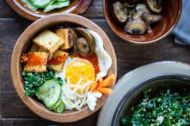

Tofu

Tofu Bibimbap
Yield: 4
Prep time: 40 MINUTES
Cook time: 20 MINUTES
Total time: 1 HOUR
INGREDIENTS
For The Pickled Vegetables
- 1 cup daikon radish matchsticks
- 1 cup carrot matchsticks
- 1/4 teaspoon salt
- 1 teaspoon sugar
- 1/3 cup rice vinegar
- 1/3 cup warm water
For The Tofu
- 1 (12-ounce) package House Foods Extra Firm Tofu, sliced into bite-sized pieces
- 2 tablespoons soy sauce
- 2 teaspoons cornstarch
- 2 tablespoons vegetable oil, divided
For The Cucumbers
- 1 cup thinly sliced English (or other seedless) cucumber
- 1/2 teaspoon sesame oil
- 1/8 teaspoon toasted sesame seeds
For The Mushrooms
- 4 ounces brown mushrooms, sliced
- 1 tablespoon vegetable oil
For The Spinach
- 6 cups baby spinach leaves
- 2 teaspoons vegetable oil
- 1/2 teaspoon finely minced garlic
- 1/2 teaspoon sesame oil
- 1/8 teaspoon toasted sesame seeds
- 1 scallion, finely minced
For The Bibimbap Sauce
- 2 tablespoons gochujang
- 2 teaspoons honey
- 2 teaspoons sesame oil
- 2 teaspoons water
- 2 teaspoons rice vinegar
- 1 teaspoon toasted sesame seeds
For The Bibimbap Bowls
- 4 cups cooked jasmine rice
- 4 eggs, fried
- 1 cup bean sprouts
INSTRUCTIONS
Pickled Vegetables:
- Prepare the pickled vegetables by combining the daikon, carrot, salt, sugar, vinegar, and warm water in a large glass container with lid.
Shake well to dissolve the salt and sugar. Set aside to pickle (at least 10-15 minutes).
Tofu:
- Arrange the sliced tofu between two double-layers of paper towels. Gently press the tofu to absorb excess liquid.
Use a fresh paper towel to pat the exterior of the tofu dry. Combine the soy sauce and cornstarch in a small bowl and whisk until combined.
Heat one tablespoon of vegetable oil in a large non-stick pan over medium heat. Toss half of the tofu pieces in the soy sauce and cornstarch mixture,
then immediately transfer to the hot pan and fry for 1-2 minutes per side, or until golden brown. Transfer to a paper-towel lined plate to drain.
Repeat with remaining tablespoon of oil and second half of tofu.
Cucumber:
- Squeeze the excess moisture out of the cucumbers using a paper towel. Toss the cucumbers with the sesame oil and toasted sesame seeds. Set aside.
Mushrooms:
- Heat the vegetable oil in a large skillet over medium-high heat. Add the sliced mushrooms and cook in a single layer until golden brown, about 2-3 minutes per side.
Set aside.
Spinach:
- Heat 2 teaspoons of oil in a large skillet over medium-heat. Add the spinach leaves and saute for 1-2 minutes, until wilted.
Immediately rinse the spinach with cool water. Use your hands to squeeze out excess liquid, until the spinach feels dry.
Toss the spinach with the minced garlic, sesame oil, sesame seeds, and scallion.
Bibimbap Sauce:
- Prepare the sauce by whisking together the gochujang, honey, sesame oil, water, rice vinegar, and sesame seeds in a small bowl.
Bibimbap Bowl:
- Place 1 cup rice into four separate serving bowls. Top with one quarter of the fried tofu and one fried egg each.
Serve with prepared toppings (pickled vegetables, cucumber, mushrooms, spinach, bean sprouts, and sauce) and allow guests to build their own bowls to his or her liking.
